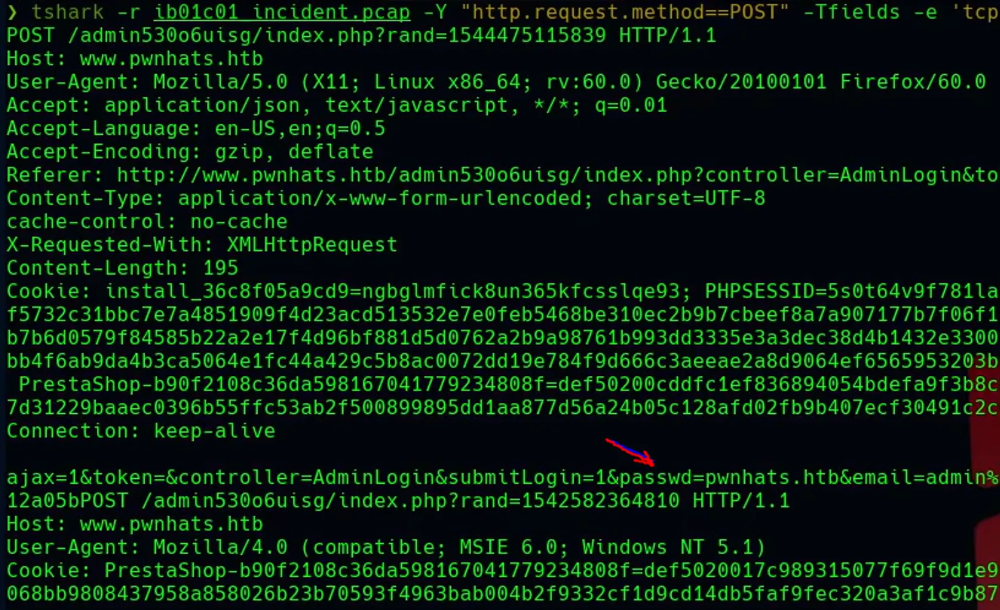

Analizar el tráfico de la red (TShark)
Tshark se utiliza igual que Wireshark, analiza capturas guardadas del tcpdump.
Abrir captura
thsark -r Captura.cap
Con el parametro “-Y” filtraremos las peticiones:
HTTP por Post
thsark -r Captura.cap -Y "http.request.method==POST" 2>/dev/null
FTP
thsark -r Captura.cap -Y "ftp" 2>/dev/null
Ver datos de un inicio de sesion
Con el parametro -Tjson podemos ver la información en formato json, de esta manera nos facilita encontrar los campos de la información de la data.
Nuestro objetivo sera localizar los datos del payload, éste se encuentra en un campo que se llama “tcp.payload”. Los datos vienen en hexadecimal.
thsark -r Captura.cap -Y "http.request.method==POST" -Tjson 2>/dev/null
Una vez tenemos localizado el payload utilizamos xxd para convertir la información de hexadecimal a un formato legible.
thsark -r Captura.cap -Y "http.request.method==POST" -Tfields -e tcp.payload 2>/dev/null | xxd -ps -r
De esta manera, podemos ver un inicio de sesion

Si la contraseña lleva urlencode podemos utilizar la consola interactiva de PHP
php --interactive
> echo urldecode("contraseña");